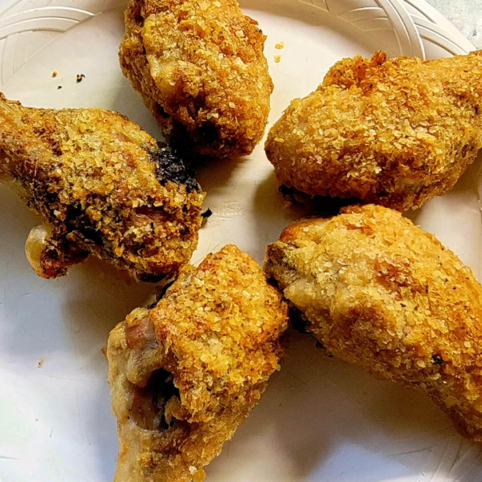

Description
This is just like potato fried chicken,
but I like to think of it as a little bit healthier!
Ingredients
- 10 chicken legs
- 1 cup melted butter
- 2 cups dry potato flakes
Steps
- Preheat oven to 400 degrees F (200 degrees C).
- Place melted butter or margarine in a shallow dish or bowl,
then place potato flakes in a separate shallow dish or bowl.
- Roll chicken pieces in butter or margarine, then in potato
flakes. Place coated chicken pieces in a 9x13 inch baking dish,
skin side up.
- Bake at 400 degrees F (200 degrees C) for 1 hour.
Return to top
Return to Main Page